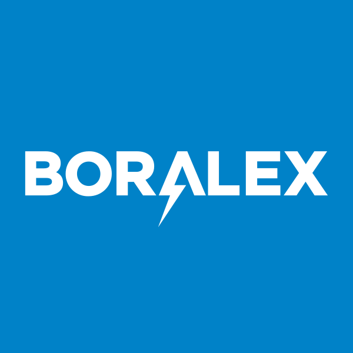
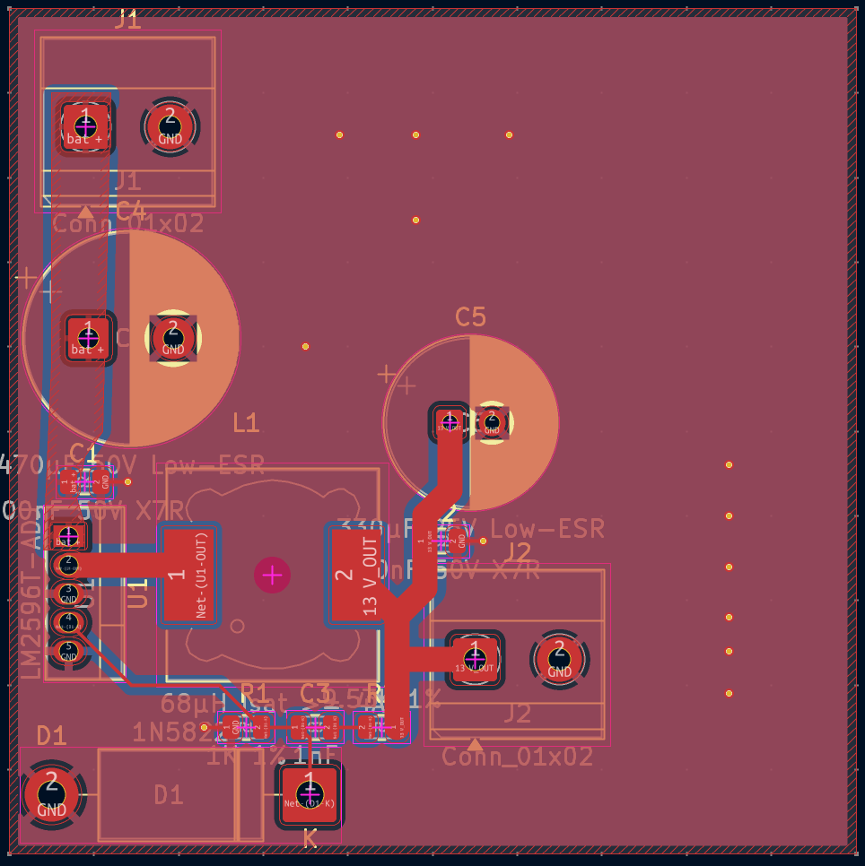
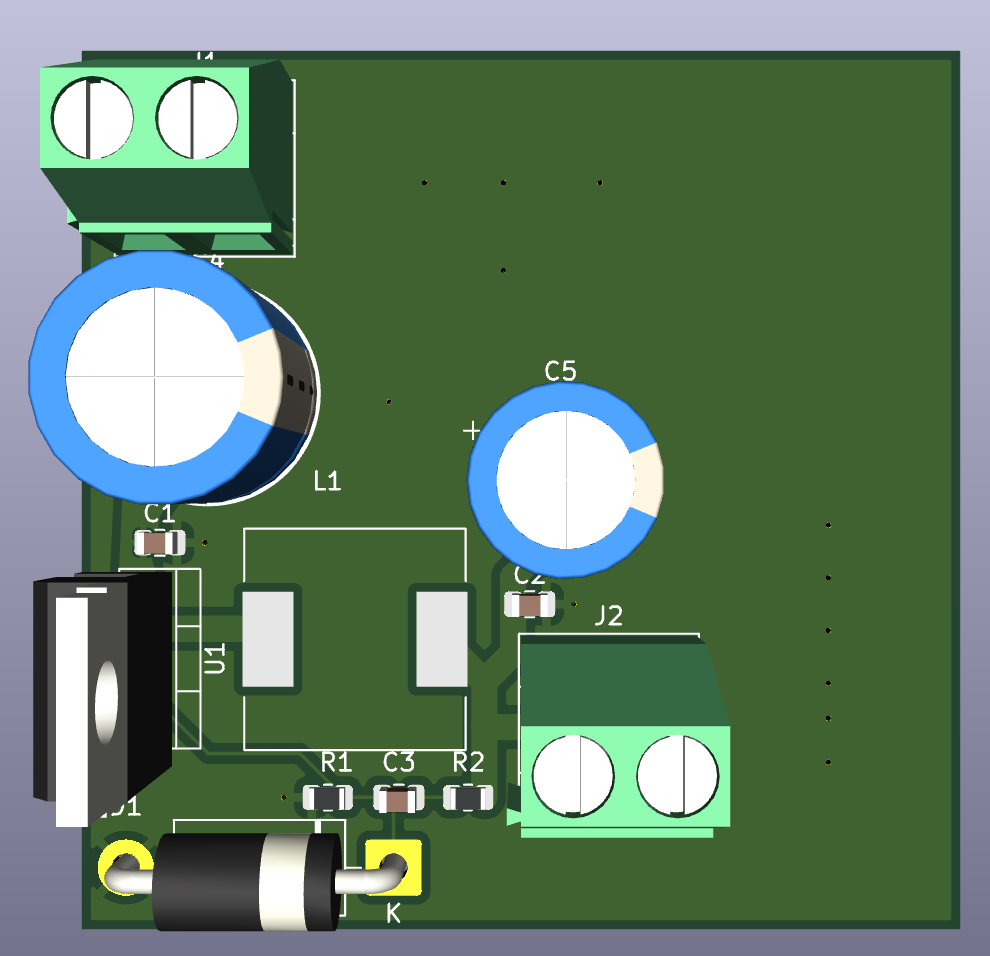
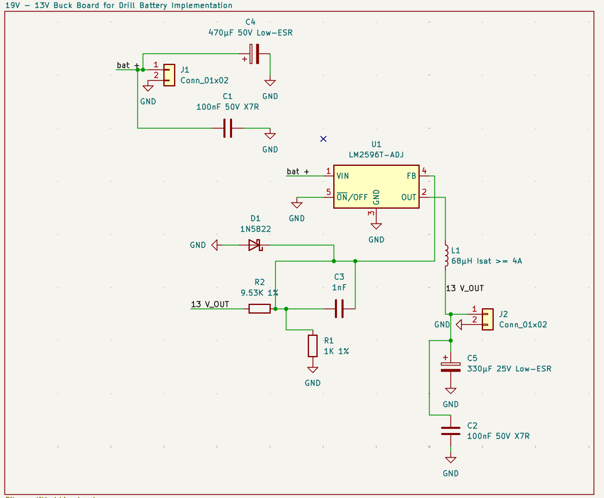
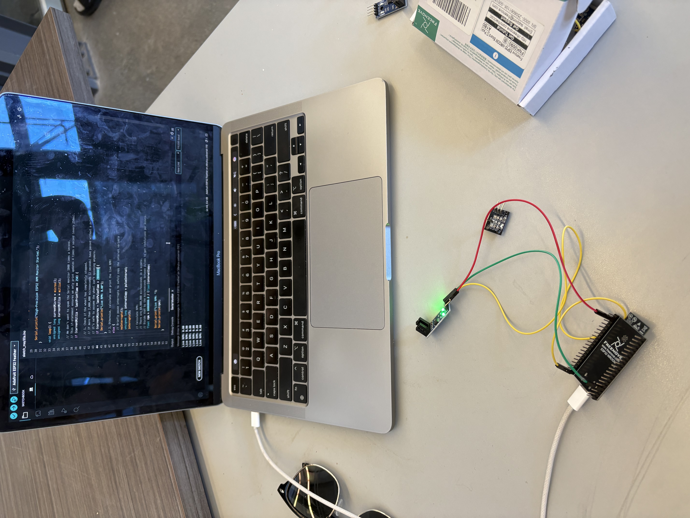

My Journey to Engineering

I am an Electrical Engineering student at the University of Waterloo, passionate about how hardware and software converge to solve physical problems. My academic focus lies in embedded systems, IoT architecture, and data acquisition (DAQ) circuitry.
My path to engineering was not traditional. Before entering Waterloo, I completed the VIU Trades Program, where I gained rigorous hands-on experience in automotive repair and electrical fabrication. While many engineers begin with theory, I began with a wrench and a multimeter.
From that experience came an unusual sense of how things fit together mechanically. Designing a circuit now involves more than lines on paper - it includes understanding how parts integrate into a larger system, heat management, and structural reliability. I am actively applying these skills on the UW Baja SAE team and am preparing for my upcoming Fall 2026 Co-op placement as an Electrical Site Coordinator Intern at Boralex.
Technical Arsenal
Professional Experience
Joining the construction and engineering team for the 125 MW/500 MWh Oxford Battery Energy Storage System (BESS) project. Reporting directly to the Site Manager, I am responsible for monitoring and overseeing on-site electrical work while ensuring effective project management focused on quality, environmental compliance, and worker safety.
- Conducting regular site inspections and auditing contractor work according to technical plans, specifications, and the overarching quality program.
- Maintaining direct communication with contractors to ensure strict compliance with health and safety requirements, environmental regulations, cost control, and project schedules.
- Drafting and reviewing vital project documentation, including progress reports, technical requests for information (RFIs), procurement tracking, and deficiency records.
- Ensuring all site activities fully comply with legal and regulatory approvals, the environmental management plan, and all associated permits.

As a core member of the electrical sub-team, I am deeply involved in designing and implementing the electronic backbone for our 10 HP off-road competition vehicle. My primary focus is on robust telemetry and system regulation in extreme environments.
- Integrating and testing a Data Acquisition (DAQ) system using Arduino, MPU6050 accelerometers, and custom RPM sensors to provide live vehicle diagnostics.
- Designing custom PCBs, including a 19V-13V buck converter, to reliably regulate drill battery power for internal electrical components during harsh races.
- Researching and coding strain gauges to extract live telemetry data, aiding the dynamics team in comprehensive system calibration.
- Fabricating space-efficient wire harnesses and designing circuit schematics to ensure the 2026 vehicle is competition-ready and fault-tolerant.

Our Baja SAE chassis in the workshop, awaiting final electrical harnessing.
Conducted comprehensive accessibility and usability audits of five faculty co-op community pages, successfully identifying and documenting critical UI/UX failures. Developed digital accessibility micro-course modules with a strong focus on accessible HTML, CSS, and inclusive web design practices. Evaluated digital environments to ensure strict compliance with AODA and WCAG standards.
Featured Projects
System Overview
To optimize our Baja SAE vehicle's electrical reliability, I engineered a custom step-down switching regulator PCB to convert a 19V drill battery input into a stable 13V output for our live telemetry framework.
Technical Implementation
- Hardware Design: Engineered the schematic and routed the board in KiCad, incorporating an LM2596T-ADJ regulator, a 68µH (4A Isat) inductor, and a 1N5822 Schottky diode for high-efficiency power conversion.
- Power Conditioning: Implemented 470µF and 330µF Low-ESR capacitors alongside 100nF X7R and 1nF bypass capacitors to minimize voltage ripple and electrical noise in extreme racing environments.
- Integration: Designed the board with generic Phoenix terminal blocks to ensure secure, vibration-resistant wire harnessing to the vehicle's main DAQ system.



← Swipe/Scroll to view render & schematic →
System Overview
To optimize our Baja SAE vehicle's performance, I engineered a custom rotational speed sensing solution using an ESP32 microcontroller and an HW-477 Hall Effect sensor to track wheel and engine RPM in real-time.
Technical Implementation
- Hardware: Wired and calibrated the HW-477 analog magnetic sensor to precisely trigger on passing ferrous targets, passing the analog signal into the ESP32.
- Firmware (C++): Developed efficient code to process rapid analog magnetic signals, applying debouncing logic to calculate highly accurate, real-time RPM telemetry without overflowing the serial monitor.
- Integration: Seamlessly integrated the sensor array into the vehicle's broader DAQ framework, allowing the engineering team to map RPM against accelerometer data for better CVT tuning.

Testing the ESP32 and HW-477 sensor logic via the Arduino IDE serial monitor.
The Engineering Solution
I engineered a low-cost, non-invasive wearable prototype utilizing the Arduino UNO R4 WiFi architecture to address hospital-induced delirium by monitoring patient sleep cycles.
- Signal Processing (C++): Programmed firmware to filter raw data from the pulse oximeter. Implemented hysteresis thresholds (Sleep < 55 BPM, Wake > 65 BPM) to accurately detect sleep states.
- IoT Connectivity: Implemented IoT functionality to securely transmit automated daily sleep reports and data arrays directly to caregivers via Gmail/Wi-Fi integration.
- Validation: Validated system reliability through component testing, confirming accurate heart rate logging, state switching, and a high success rate of email data delivery.

Prototype hardware for the Arduino-based sleep tracking device.
Trades & Mechanical Foundation
Completed during the VIU Trades Program (Sep 2024 - Feb 2025). This practical experience allows me to bridge the gap between abstract electrical design and physical, structural fabrication.
Electrical & Circuitry
Fabricated electrical extension units entirely from scratch. This required strict interpretation of technical schematics and a deep understanding of current flow, ensuring all builds were in full compliance with CSA grounding and safety standards.
Automotive Diagnostics
Performed hands-on automotive maintenance, including brake pad replacements and fluid servicing. This instilled a practical understanding of vehicle mechanical systems, tight-tolerance assembly, and rigorous workshop safety protocols.
Precision Fabrication
Fabricated custom products using heavy industrial power tools. This process required applying precision finishing techniques, analyzing material properties under stress, and adjusting measurements on the fly to ensure perfect assembly fits.
Thermal Cutting & Welding
Utilized thermal cutting and welding techniques to separate and fuse metal components. Working with open flame and molten steel demanded extreme focus on heat control, structural integrity, and safety compliance.